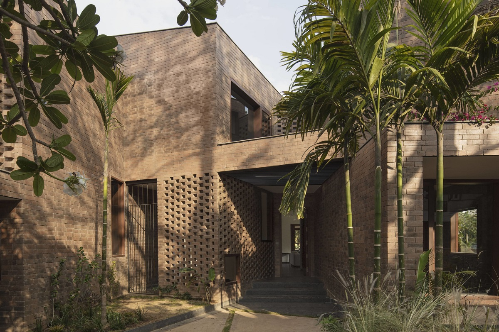
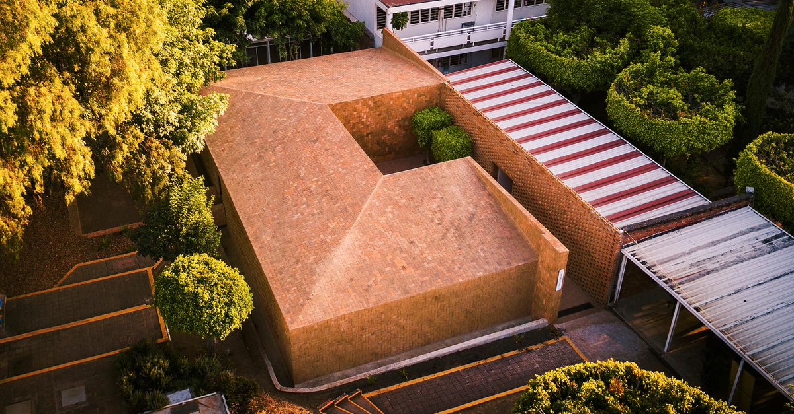
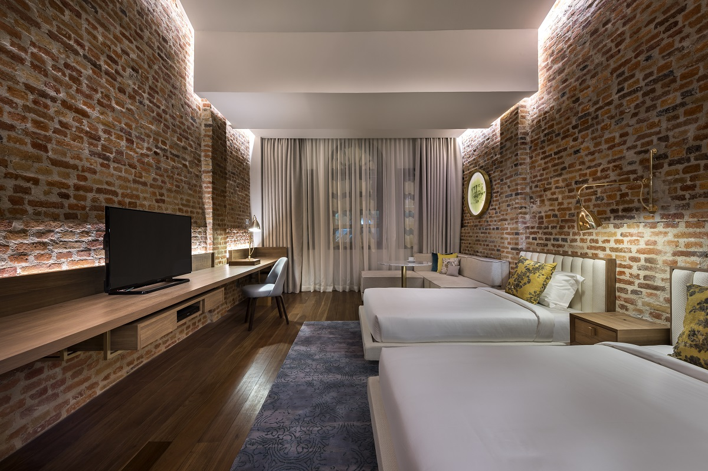

Trong cuộc sống hàng ngày, chúng ta đều thấy sự hiện diện của gạch theo cách này hay cách khác, nhưng việc sử dụng cũng như bảo dưỡng nó không phải ai cũng có thể nằm lòng.

Với những lợi ích như đa dạng về hình dáng, màu sắc, kết cấu và đặc biệt là giá thành rẻ, gạch là loại vật liệu trước nay vẫn được ưa chuộng số một trong xây dựng kiến trúc. Tính linh hoạt của gạch đã giúp các KTS, nhà thiết kế truyền tải được nhiều ý tưởng độc đáo, mới mẻ vào ngành kiến trúc nói riêng và cuộc sống nói chung trở nên dễ dàng hơn.
Không có vật liệu xây dựng nào có tính ứng dụng và phổ biến như gạch, tuy nhiên ở mặt khác gạch cũng có những khuyết điểm trong xây dựng vì chúng khá dễ bị hư hại bởi tác động bên ngoài. Và một trong số nguyên nhân có thể dễ dàng ảnh hưởng đến gạch là ánh sáng mặt trời trực tiếp (hoặc thiếu ánh sáng mặt trời), gió, độ ẩm, nhiệt độ quá lạnh,…
Mặc dù ưu điểm lớn nhất của gạch là có tuổi thọ cao và đa dạng trong xây dựng công trình, nhưng đồng thời loại vật liệu quý giá này cũng có thể bị ảnh hưởng nghiêm trọng nếu không biết cách sử dụng và giữ gìn đúng cách. Bài viết dưới đây sẽ bật mí cho bạn những mẹo “đỉnh nhất” mà mọi KTS, nhà thiết kế hay thậm chí cả những người dân bình thường cần biết để bảo dưỡng những bức tường gạch, giúp giữ được giá trị và đảm bảo tính bền vững trong kiến trúc hiện đại.
Hiểu rõ loại gạch cho công trình của bạn

Điều này có thể hơi phức tạp nhưng nó thực sự rất quan trọng trong việc xác định loại gạch nào được sử dụng cho công trình của bạn. Hãy chú ý đến màu sắc, kết cấu của tường gạch bởi có một số loại gạch có độ bền kém hơn và cần bảo dưỡng nhiều hơn những loại gạch khác. Một số loại gạch trong xây dựng:
Gạch nung (đất sét) phơi nắng: Đây là loại gạch không bền bằng gạch nung. Nó được tạo ra bằng cách nặn đất sét và sau đó làm khô trong không khí. Loại gạch phơi nắng này không chống nước tốt. Vì vậy, tốt hơn hết bạn nên sử dụng các kỹ thuật cách nhiệt để tránh hư hỏng trong tương lai.
Gạch đất sét nung: Là một loại gạch được sản xuất thông qua quá trình đúc trên bàn, rồi sau đó đem nung trong các lò nung lớn. Gạch đất sét nung rất bền và giữ được hình dạng trong một thời gian dài.
Gạch tro bay: Được làm từ hỗn hợp tro và nước. Nếu bạn cần tìm loại gạch tốt nhất cho công trình của mình thì gạch tro bay là một lựa chọn tuyệt vời bởi chúng có trọng lượng nhẹ; chống đông lạnh và rã đông, ngoài ra còn có độ xốp nước rất thấp.
Gạch bê tông: Là một lựa chọn tốt trong việc cần bảo dưỡng, sửa chữa công trình của mình vì
loại gạch này có khả năng chịu nước và không dễ bị ẩm mốc như gạch thông thường.
Gạch vôi cát: Được biết đến với kết cấu dạng hạt. Loại gạch này chủ yếu được sử dụng trong
trang trí nội thất trong nhà.
Gạch kỹ thuật: Có màu sắc ấm, khá chắc chắn, có độ xốp nước thấp; nhờ thế bạn sẽ không mất nhiều thời gian cho việc bảo dưỡng chúng vì chúng không dễ bị hư hại.
Cách kiểm tra hư hỏng nấm mốc và bảo dưỡng tường gạch
1. Tường gạch ngoại thất

Kiểm tra hư hỏng tường gạch định kỳ tối thiểu mỗi năm một lần. Cách làm là bạn dùng vòi nước với áp suất cao, phun lên tường để kiểm tra xem vữa có bị bong ra không hoặc mảnh tường bị nứt, vỡ,…

red old brick wall with climbing plants, background photo
Luôn làm sạch tường: Có thể rất nhiều người yêu thích và cho rằng những lớp bụi bẩn trên tường được tích tụ qua thời gian sẽ tạo nên một nét rêu phong, hoài cổ cho ngôi nhà của mình. Nhưng không hẳn như vậy, bởi có rất nhiều cách để tạo nên vẻ mộc mạc đó mà không cần tích bụi lên tường, hơn nữa việc tích bụi bẩn chỉ làm bức tường của bạn nhanh hỏng hơn thôi. Phương án thay thế cho “lớp bụi hoài cổ” là bạn có thể đầu tư vào các loại cây leo như: thường xuân , cây kim ngân,… Chúng không chỉ mang lại vẻ đẹp tự nhiên, mộc mạc cho bức tường gạch mà còn giúp che chắn bức tường khỏi ánh nắng gay gắt – nguyên nhân trực tiếp gây hư hại cho tường gạch. Tuy nhiên, cách này đòi hỏi bạn cần cẩn thận chăm sóc những cây leo bằng việc cắt tỉa chúng và làm sạch phần tường gạch bên dưới thường xuyên.
Lên lịch bảo dưỡng và làm sạch tường gạch: Kiểm tra hư hỏng là điều rất quan trọng vì ảnh hưởng bởi tác động bên ngoài, tường gạch sẽ hay bị ẩm mốc và điều đó lại gây hại cho sức khỏe cho con người. Vì vậy, bạn hãy đeo găng tay và chuẩn bị dụng cụ, sau đó sử dụng hỗn hợp đơn giản gồm thuốc tẩy, nước, cùng với bàn chải để làm sạch tường. Hoặc bạn có thể mua các loại chất tẩy rửa chuyên dụng rồi pha loãng với nước để đạt được hiệu quả cao nhất, lưu ý nên sử dụng nó một cách thận trọng.
2. Gạch nội thất
Một điều quan trọng không thể thiếu trong bảo quản nội thất tường gạch là bạn phải giữ tường gạch thật khô ráo bằng mọi giá. Khác với tường gạch ngoài trời, vì không được hong khô bằng ánh nắng mặt trời nên tường gạch trong nhà dễ bị ẩm mốc hơn hẳn. Do đó, bạn cần kiểm tra tường gạch thường xuyên để đảm bảo nấm mốc hay bụi bẩn không tích tụ. Trong trường hợp có bụi bẩn nấm mốc thì hãy cẩn thận loại bỏ nó và phủ thêm lớp vữa mới.

Chà, cọ nhẹ nhàng. Vẫn là hỗn hợp thuốc tẩy và nước hoặc các chất tẩy rửa chuyên dụng để tẩy rỉ sét và vết bẩn trên tường gạch. Hoạt động chà, cọ này nên nhẹ nhàng cẩn thận để tránh làm hỏng đến kết cấu bên trong của căn nhà.
Loại bỏ nấm mốc và sủi bọt. Ngoài bụi bẩn, nấm mốc được sử dụng các loại chất tẩy rửa như đã nhắc ở trên, tường gạch còn thường hay xuất hiện các mảng sủi bọt, đây là một chất dạng bột màu trắng, qua thời gian dần hình thành trên tường gạch do cặn muối tự nhiên để lại sau khi thấm nước từ các lỗ rỗng của tường gạch. Với trường hợp này, bạn nên dùng bàn chải lông khô để chà sạch nó. Nếu trường hợp nghiêm trọng hơn mà bàn chải lông không hoạt động hiệu quả, bạn có thể thử sag phương pháp phun cát.
Nếu tường gạch thực sự bị hư hỏng nghiêm trọng?
Sau khi sử dụng những mẹo ở trên để kiểm tra hư hỏng trong gạch và tìm thấy một số mảng tường bị hư hỏng nghiêm trọng, đừng tuyệt vọng, bạn có thể thực hiện các phương án dưới đây để khắc phục tình trạng cho bức tường của mình một cách nhanh chóng nhất.
Với những chỗ hư hỏng, trước tiên cần phải làm sạch tường bằng cách loại bỏ cẩn thận lớp vữa bị hư hỏng và sau đó là phủ lên một lớp vữa mới.
Ngoài ra, với một số bức tường có thể dùng sơn tường, vẻ ngoài của tường gạch không những được bảo vệ mà còn trở nên đẹp đẽ và thu hút hơn. Có một số lưu ý để có một lớp sơn tường hoàn hảo, đó là cần lựa chọn sơn tường một cách cẩn thận bởi vì chúng cần phải phù hợp với điều kiện khí hậu, tránh gây ra thêm nhiều vấn đề cho bức tường gạch. Ví dụ: Một số loại sơn hoạt động tốt hơn ở khí hậu lạnh so với một số vùng thời tiết hanh khô, chúng có thể giữ ẩm ướt và làm cho tình trạng của bức tường gạch trở nên xấu đi nhanh chóng. Vì thế, ngoài những mẹo kể trên, hãy luôn tham khảo thêm các ý kiến của chuyên gia để đảm bảo giúp cho bức tường gạch ngôi nhà bạn ở trong trạng thái “khỏe mạnh” nhất.
Biên dịch | H.N (Nguồn: Arch2o)